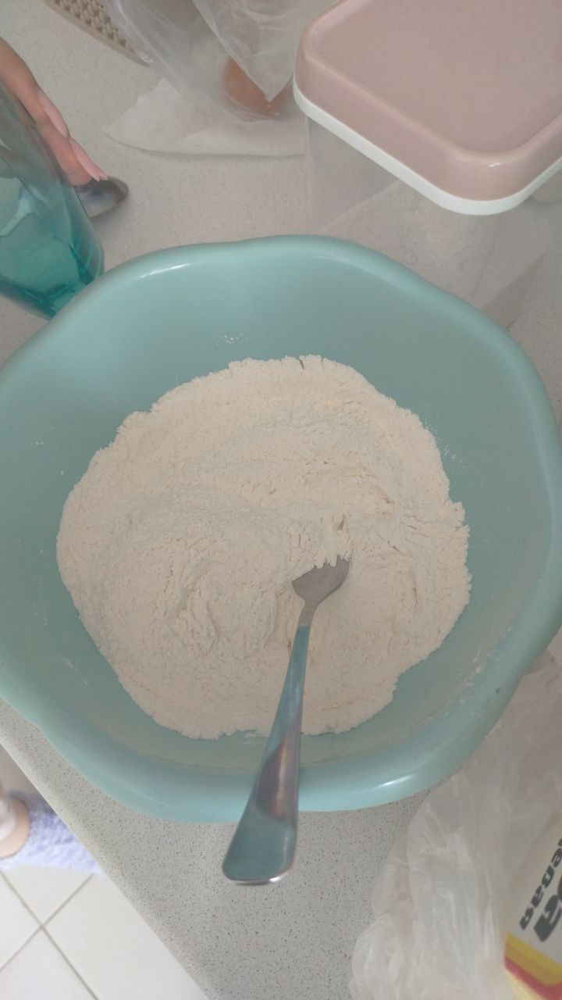
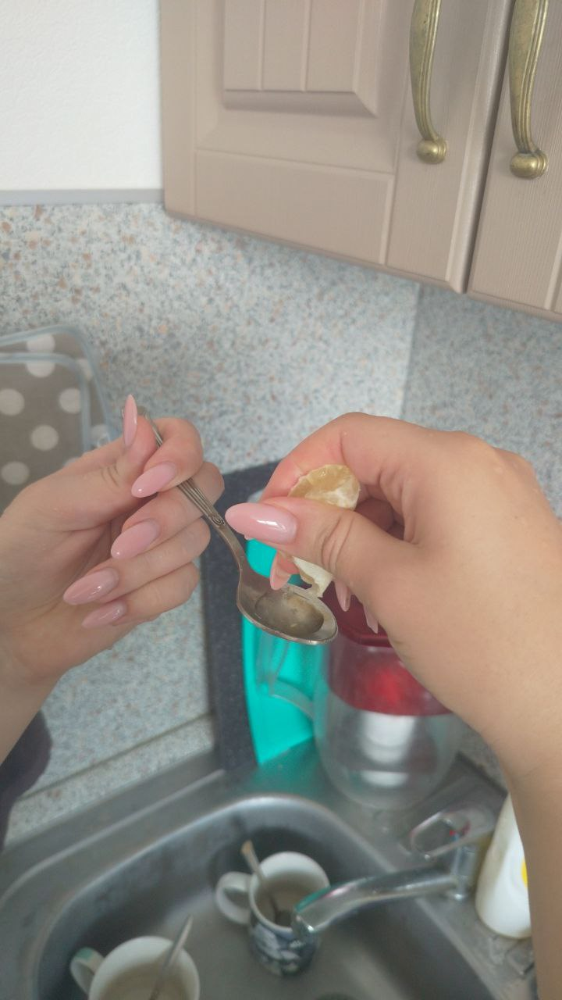
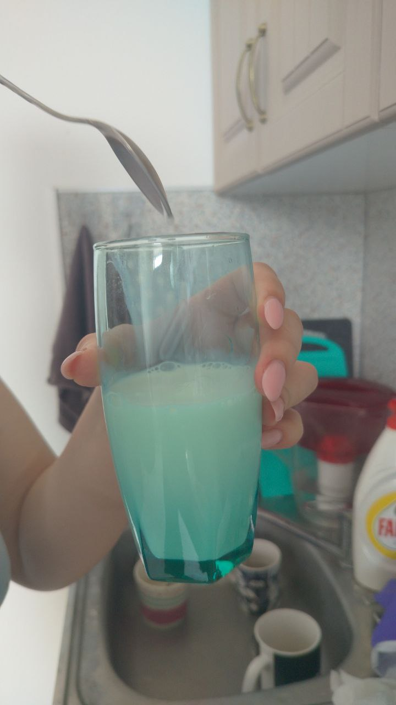

Панкейки
? минут готовки

Ингридиенты:
- Мука
- Сахар
- Яйцо С1
- Молоко
- Лимонный сок / лимонная кислота
1. Делаем тесто

Добавляем в миску: 8 столовых ложек муки, 2 столовые ложки сахара, 0.5 чайной ложки соли. Перемешиваем все это.
Добавляем в миску яйцо и размешиваем.

Добавляем в стакан: 0.5 чайной ложки соды, 1 чайную ложку лимонного сока. Сода долга вспениться.

Добавляем в стакан молоко.
Наливаем стакан в миску и перемешиваем. Если масса слишкам густая, то добавляем еще молока. Должно получиться так как на видео выше
Добавляем в миску 3 столовые ложки оливкового / подсолнечного масла. Перемешиваем.
2. Жарим
Выкладываем ложку полученной массы на скороводку.
Когда появляются пузырики - переворачиваем.